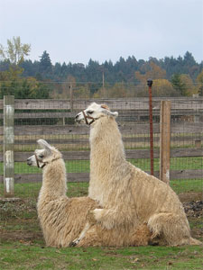

Llamas have an unusual reproductive cycle for a large animal. Female llamas are induced ovulators. Through the act of mating, the female releases an egg and is often fertilized on the first attempt. Female llamas do not go into "heat" or have an estrus cycle.[6]
Like humans, llama males and females mature sexually at different rates. Females reach puberty at approximately 12 months. However, males do not become sexually mature until approximately 3 years.[7]
Mating
Llamas mate with the female in a kush (lying down) position, which is fairly unusual in a large animal. They mate for an extended period of time (20–45 minutes), also unusual in a large animal.
Gestation
The gestation period of a llama is 11 1/2 months (350 days). Dams (female llamas) do not lick off their babies, as they have an attached tongue which does not reach outside of the mouth more than half an inch. Rather, they will nuzzle and hum to their newborns.[8]
Crias
A cria (pronounced cree-ah) is the name for a baby llama (also alpaca, vicuña, or guanaco). Crias are typically born with the whole herd gathering around (just the females are present, the males are considered a threat) in an attempt to protect against potential predators. Llamas give birth standing. Birth is usually relatively quick and problem free, over in less than 30 minutes. Most births take place between 8 a.m. and noon, during the relatively warmer daylight hours. This may increase cria survival by reducing fatalities due to hypothermia during cold Andean nights. While unproven, it is speculated that this birthing pattern is a continuation of the birthing patterns observed in the wild. Crias are up and standing, walking and attempting to nurse within the first hour after birth.[9][10][11] Crias are partially fed with llama milk that is lower in fat and salt and higher in phosphorous and calcium than cow or goat milk. A female llama will only produce about 60 ml (0.0021 oz) of milk at a time when she gives milk. For this reason, the cria must suckle frequently to receive the nutrients it requires.[12]